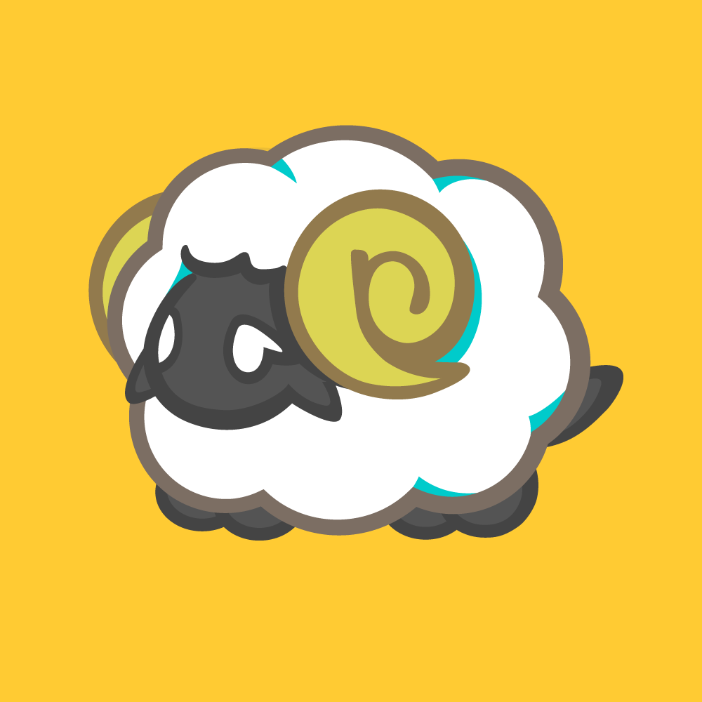

About
自己紹介ページです。ご閲覧いただきありがとうございます！
This is my About page. Thank you for visiting!

新潟県出身。VTuber・一次創作のお手伝いをしています。
イメージをお聞きして作るBGM・ジングルを中心に、
Live2Dモデリング、ロゴや配信画面のデザイン、イラスト制作まで。
ひとりのキャラクターを長く担当できるようにしています。
キャラクターや世界観を読み解いて、音とかたちに落とし込んでいく時間がいちばん好きです。
「こういう雰囲気にしたい」の段階から、ぜひご相談ください。
お仕事のご依頼は Contact から、 またはコミッションサイト（つなぐ）よりお願いいたします。
現在の使用ソフト
- Logic Pro作曲・編曲・ミックス
- Live2D Cubismモデリング（VTube Studio 対応）
- CLIP STUDIO PAINTイラスト・モデル用パーツ作画
- Adobe Illustratorロゴ・配信画面などのデザイン
取得資格
- Photoshop® クリエイター能力認定試験エキスパート
- Illustrator® クリエイター能力認定試験エキスパート
pickup
制作実績からピックアップ